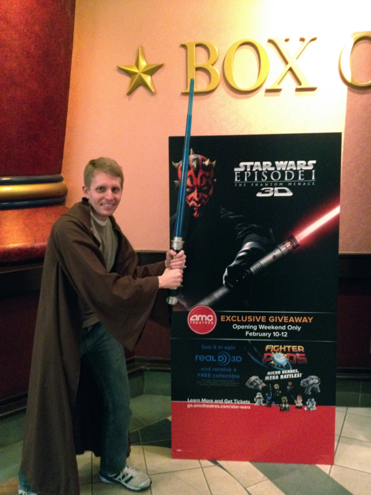
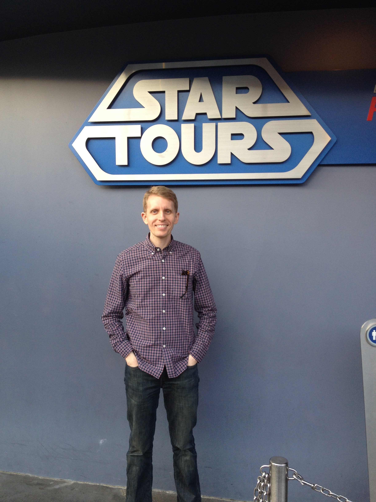
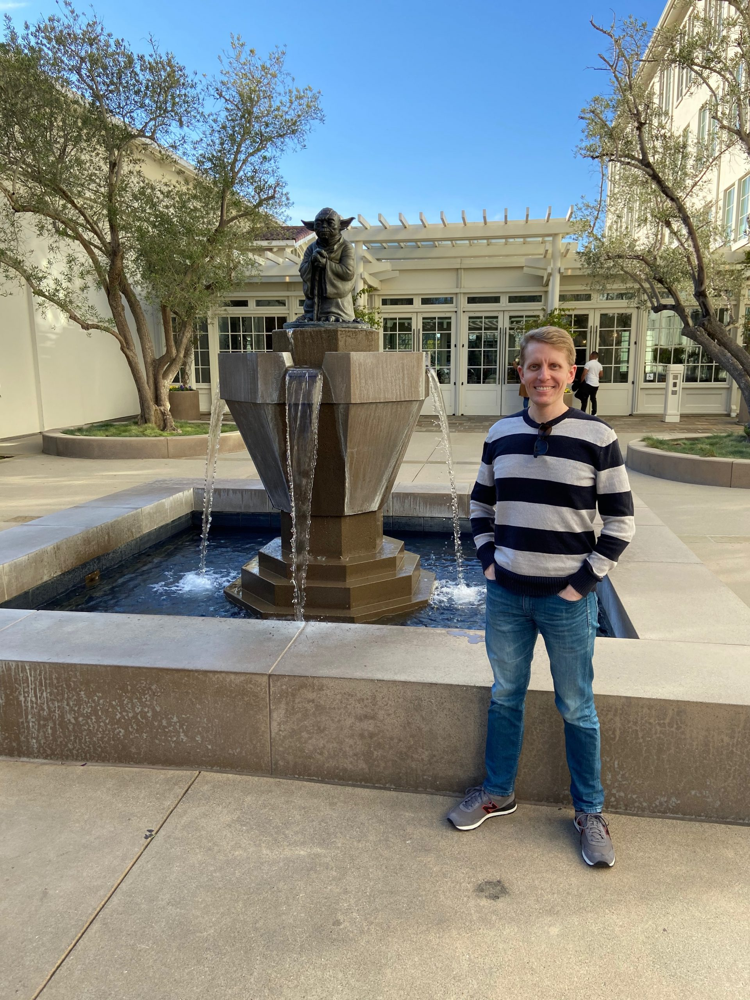
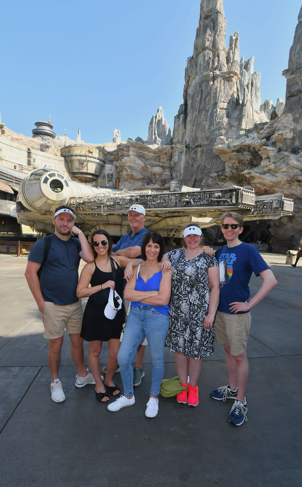

Alan Jern
Publications
Teaching
Lab
Blog
Star Wars around the world
Washington, D.C., 1997
San Francisco, 1998
Fresno, October 1998
Los Angeles, May 2004
Baltimore, July 2007
Disneyland, November 2007
Boston, October 2009
Pittsburgh, November 2009
Pittsburgh, April 2010
Washington, D.C, April 2011

Pittsburgh, Februrary 2012
Indianapolis, August 2013
Seattle, July 2014
Hollywood, October 2014
Terre Haute, Indiana, December 2014

Disneyland, December 2014
Mackinac Island, Michigan, June 2015
London, July 2015
Fresno, December 2015
St. Louis, April, 2016
Seattle, July 2016
New York City, August 2016
Disney World, February 2017
Fort Wayne, Indiana, April 2017
St. Petersburg, Florida, January 2018
Disneyland, June 2018
Madison, Wisconsin, July 2018
Niagara Falls, October 2018
Chicago, April 2019
Indianapolis, December 2019

San Francisco, February 2020
Cincinnati, April 2021
Pittsburgh, May 2021

Disneyland, August 2022


{kind=link}
{kind=link}
{kind=link}
{kind=link}
{kind=link}
{kind=link}
{kind=link}
{kind=link}
{kind=link}
{kind=link}
{kind=link}
{kind=link}


{kind=link}